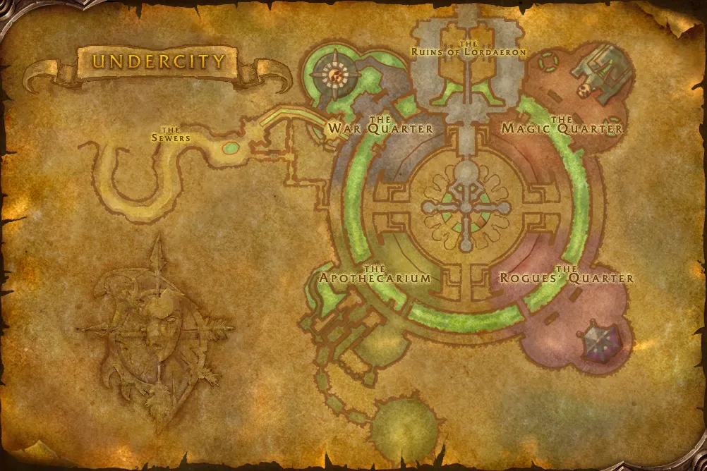

Accès
 Entrée Fossoyeuse 72.5, 11.3
Entrée Fossoyeuse 72.5, 11.3 5 joueurs · niveaux 15 à 20
5 joueurs · niveaux 15 à 20 10 quêtes · 0 boss
10 quêtes · 0 boss
Le point rouge marque l'entrée du donjon.
Toutes les zones sont sur notre carte interactive.
Au-dessus de Fossoyeuse, les ruines de la capitale déchue de Lordaeron deviennent un donjon. Nouveau dans Forever, il s'adresse surtout aux joueurs de la Horde.
📅 Mise à jour le 4 novembre 2026🛠 Patch 1.60.1.70755

Entrée Fossoyeuse 72.5, 11.3 5 joueurs · niveaux 15 à 20 10 quêtes · 0 bossLe point rouge marque l'entrée du donjon.
Toutes les zones sont sur notre carte interactive.
Le butin de ce nouveau donjon sera ajouté dès qu'il sera connu. Passe la souris sur un objet pour voir ses caractéristiques (info-bulle Wowhead), ou clique pour ouvrir sa fiche.
Donnée par : Captain Truman (Ruines de Lordaeron)
Donnée par : en ramassant un objet
Donnée par : Tabitha Heartweaver (Forêt des Pins-Argentés)
Donnée par : en ramassant un objet
Donnée par : en ramassant un objet
Donnée par : en ramassant un objet
Donnée par : Morbin Lightbane (Fossoyeuse)
Donnée par : en ramassant un objet
Donnée par : Theodore Griffs (Fossoyeuse)
Donnée par : Deathguard Kristof (Clairières de Tirisfal)
Noms des quêtes, des PNJ et des objets d'après les données du jeu (Polestar, CC BY 4.0, et Factoruide/Questie).